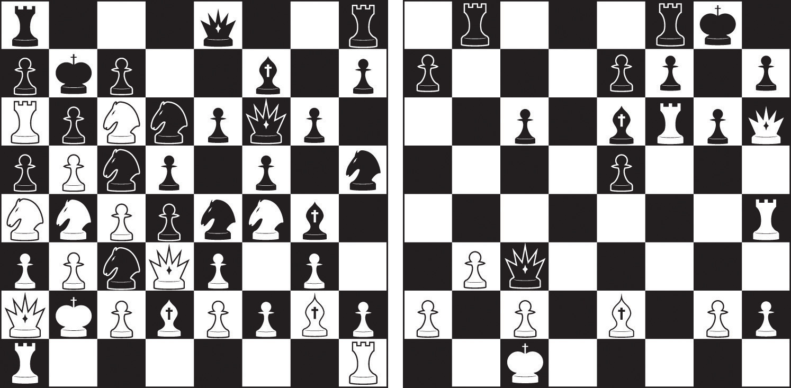

As you can see in Table 8.1 "Memory Conceptualized in Terms of Types, Stages, and Processes", psychologists conceptualize memory in terms of types, in terms of stages, and in terms of processes. In this section we will consider the two types of memory, explicit memory and implicit memory, and then the three major memory stages: sensory, short-term, and long-term (Atkinson & Shiffrin, 1968).Atkinson, R. C., & Shiffrin, R. M. (1968). Human memory: A proposed system and its control processes. In K. Spence (Ed.), The psychology of learning and motivation (Vol. 2). Oxford, England: Academic Press. Then, in the next section, we will consider the nature of long-term memory, with a particular emphasis on the cognitive techniques we can use to improve our memories. Our discussion will focus on the three processes that are central to long-term memory: encoding, storage, and retrieval.
Table 8.1 Memory Conceptualized in Terms of Types, Stages, and Processes
| As types | Explicit memory |
| Implicit memory | |
| As stages | Sensory memory |
| Short-term memory | |
| Long-term memory | |
| As processes | Encoding |
| Storage | |
| Retrieval |
When we assess memory by asking a person to consciously remember things, we are measuring explicit memory. Explicit memoryKnowledge or experiences that can be consciously remembered. refers to knowledge or experiences that can be consciously remembered. As you can see in Figure 8.2 "Types of Memory", there are two types of explicit memory: episodic and semantic. Episodic memoryExplicit memory about the firsthand experiences that we have had. refers to the firsthand experiences that we have had (e.g., recollections of our high school graduation day or of the fantastic dinner we had in New York last year). Semantic memoryExplicit memory of knowledge of facts and concepts about the world. refers to our knowledge of facts and concepts about the world (e.g., that the absolute value of −90 is greater than the absolute value of 9 and that one definition of the word “affect” is “the experience of feeling or emotion”).
Figure 8.2 Types of Memory

Explicit memory is assessed using measures in which the individual being tested must consciously attempt to remember the information. A recall memory testA measure of explicit memory that involves bringing from memory information that has previously been remembered. is a measure of explicit memory that involves bringing from memory information that has previously been remembered. We rely on our recall memory when we take an essay test, because the test requires us to generate previously remembered information. A multiple-choice test is an example of a recognition memory testA measure of explicit memory that involves determining whether information has been seen or learned before., a measure of explicit memory that involves determining whether information has been seen or learned before.
Your own experiences taking tests will probably lead you to agree with the scientific research finding that recall is more difficult than recognition. Recall, such as required on essay tests, involves two steps: first generating an answer and then determining whether it seems to be the correct one. Recognition, as on multiple-choice test, only involves determining which item from a list seems most correct (Haist, Shimamura, & Squire, 1992).Haist, F., Shimamura, A. P., & Squire, L. R. (1992). On the relationship between recall and recognition memory. Journal of Experimental Psychology: Learning, Memory, and Cognition, 18(4), 691–702. Although they involve different processes, recall and recognition memory measures tend to be correlated. Students who do better on a multiple-choice exam will also, by and large, do better on an essay exam (Bridgeman & Morgan, 1996).Bridgeman, B., & Morgan, R. (1996). Success in college for students with discrepancies between performance on multiple-choice and essay tests. Journal of Educational Psychology, 88(2), 333–340.
A third way of measuring memory is known as relearning (Nelson, 1985).Nelson, T. O. (1985). Ebbinghaus’s contribution to the measurement of retention: Savings during relearning. Journal of Experimental Psychology: Learning, Memory, and Cognition, 11(3), 472–478. Measures of relearning (or savings)A measure of explicit memory that involves assessing how much more quickly information is processed or learned when it is studied again after it has already been learned but then forgotten. assess how much more quickly information is processed or learned when it is studied again after it has already been learned but then forgotten. If you have taken some French courses in the past, for instance, you might have forgotten most of the vocabulary you learned. But if you were to work on your French again, you’d learn the vocabulary much faster the second time around. Relearning can be a more sensitive measure of memory than either recall or recognition because it allows assessing memory in terms of “how much” or “how fast” rather than simply “correct” versus “incorrect” responses. Relearning also allows us to measure memory for procedures like driving a car or playing a piano piece, as well as memory for facts and figures.
While explicit memory consists of the things that we can consciously report that we know, implicit memory refers to knowledge that we cannot consciously access. However, implicit memory is nevertheless exceedingly important to us because it has a direct effect on our behavior. Implicit memoryThe influence of experience on behavior, even if the individual is not aware of those influences. refers to the influence of experience on behavior, even if the individual is not aware of those influences. As you can see in Figure 8.2 "Types of Memory", there are three general types of implicit memory: procedural memory, classical conditioning effects, and priming.
Procedural memoryImplicit memory about our often unexplainable knowledge of how to do things. refers to our often unexplainable knowledge of how to do things. When we walk from one place to another, speak to another person in English, dial a cell phone, or play a video game, we are using procedural memory. Procedural memory allows us to perform complex tasks, even though we may not be able to explain to others how we do them. There is no way to tell someone how to ride a bicycle; a person has to learn by doing it. The idea of implicit memory helps explain how infants are able to learn. The ability to crawl, walk, and talk are procedures, and these skills are easily and efficiently developed while we are children despite the fact that as adults we have no conscious memory of having learned them.
A second type of implicit memory is classical conditioning effects, in which we learn, often without effort or awareness, to associate neutral stimuli (such as a sound or a light) with another stimulus (such as food), which creates a naturally occurring response, such as enjoyment or salivation. The memory for the association is demonstrated when the conditioned stimulus (the sound) begins to create the same response as the unconditioned stimulus (the food) did before the learning.
The final type of implicit memory is known as primingChanges in behavior as a result of experiences that have happened frequently or recently., or changes in behavior as a result of experiences that have happened frequently or recently. Priming refers both to the activation of knowledge (e.g., we can prime the concept of “kindness” by presenting people with words related to kindness) and to the influence of that activation on behavior (people who are primed with the concept of kindness may act more kindly).
One measure of the influence of priming on implicit memory is the word fragment test, in which a person is asked to fill in missing letters to make words. You can try this yourself: First, try to complete the following word fragments, but work on each one for only three or four seconds. Do any words pop into mind quickly?
_ i b _ a _ y
_ h _ s _ _ i _ n
_ o _ k
_ h _ i s _
Now read the following sentence carefully:
“He got his materials from the shelves, checked them out, and then left the building.”
Then try again to make words out of the word fragments.
I think you might find that it is easier to complete fragments 1 and 3 as “library” and “book,” respectively, after you read the sentence than it was before you read it. However, reading the sentence didn’t really help you to complete fragments 2 and 4 as “physician” and “chaise.” This difference in implicit memory probably occurred because as you read the sentence, the concept of “library” (and perhaps “book”) was primed, even though they were never mentioned explicitly. Once a concept is primed it influences our behaviors, for instance, on word fragment tests.
Our everyday behaviors are influenced by priming in a wide variety of situations. Seeing an advertisement for cigarettes may make us start smoking, seeing the flag of our home country may arouse our patriotism, and seeing a student from a rival school may arouse our competitive spirit. And these influences on our behaviors may occur without our being aware of them.
One of the most important characteristics of implicit memories is that they are frequently formed and used automatically, without much effort or awareness on our part. In one demonstration of the automaticity and influence of priming effects, John Bargh and his colleagues (Bargh, Chen, & Burrows, 1996)Bargh, J. A., Chen, M., & Burrows, L. (1996). Automaticity of social behavior: Direct effects of trait construct and stereotype activation on action. Journal of Personality & Social Psychology, 71, 230–244. conducted a study in which they showed college students lists of five scrambled words, each of which they were to make into a sentence. Furthermore, for half of the research participants, the words were related to stereotypes of the elderly. These participants saw words such as the following:
in Florida retired live people
bingo man the forgetful plays
The other half of the research participants also made sentences, but from words that had nothing to do with elderly stereotypes. The purpose of this task was to prime stereotypes of elderly people in memory for some of the participants but not for others.
The experimenters then assessed whether the priming of elderly stereotypes would have any effect on the students’ behavior—and indeed it did. When the research participant had gathered all of his or her belongings, thinking that the experiment was over, the experimenter thanked him or her for participating and gave directions to the closest elevator. Then, without the participants knowing it, the experimenters recorded the amount of time that the participant spent walking from the doorway of the experimental room toward the elevator. As you can see in Figure 8.3 "Results From Bargh, Chen, and Burrows, 1996", participants who had made sentences using words related to elderly stereotypes took on the behaviors of the elderly—they walked significantly more slowly as they left the experimental room.
Figure 8.3 Results From Bargh, Chen, and Burrows, 1996
Bargh, Chen, and Burrows (1996) found that priming words associated with the elderly made people walk more slowly.
Source: Adapted from Bargh, J. A., Chen, M., & Burrows, L. (1996). Automaticity of social behavior: Direct effects of trait construct and stereotype activation on action. Journal of Personality & Social Psychology, 71, 230–244.
To determine if these priming effects occurred out of the awareness of the participants, Bargh and his colleagues asked still another group of students to complete the priming task and then to indicate whether they thought the words they had used to make the sentences had any relationship to each other, or could possibly have influenced their behavior in any way. These students had no awareness of the possibility that the words might have been related to the elderly or could have influenced their behavior.
Another way of understanding memory is to think about it in terms of stages that describe the length of time that information remains available to us. According to this approach (see Figure 8.4 "Memory Duration"), information begins in sensory memory, moves to short-term memory, and eventually moves to long-term memory. But not all information makes it through all three stages; most of it is forgotten. Whether the information moves from shorter-duration memory into longer-duration memory or whether it is lost from memory entirely depends on how the information is attended to and processed.
Figure 8.4 Memory Duration

Memory can characterized in terms of stages—the length of time that information remains available to us.
Source: Adapted from Atkinson, R. C., & Shiffrin, R. M. (1968). Human memory: A proposed system and its control processes. In K. Spence (Ed.), The psychology of learning and motivation (Vol. 2). Oxford, England: Academic Press.
Sensory memoryThe brief storage of sensory information. refers to the brief storage of sensory information. Sensory memory is a memory buffer that lasts only very briefly and then, unless it is attended to and passed on for more processing, is forgotten. The purpose of sensory memory is to give the brain some time to process the incoming sensations, and to allow us to see the world as an unbroken stream of events rather than as individual pieces.
Visual sensory memory is known as iconic memoryThe visual sensory memory.. Iconic memory was first studied by the psychologist George Sperling (1960).Sperling, G. (1960). The information available in brief visual presentation. Psychological Monographs, 74(11), 1–29. In his research, Sperling showed participants a display of letters in rows, similar to that shown in Figure 8.5 "Measuring Iconic Memory". However, the display lasted only about 50 milliseconds (1/20 of a second). Then, Sperling gave his participants a recall test in which they were asked to name all the letters that they could remember. On average, the participants could remember only about one-quarter of the letters that they had seen.
Figure 8.5 Measuring Iconic Memory
Sperling (1960) showed his participants displays such as this one for only 1/20th of a second. He found that when he cued the participants to report one of the three rows of letters, they could do it, even if the cue was given shortly after the display had been removed. The research demonstrated the existence of iconic memory.
Source: Adapted from Sperling, G. (1960). The information available in brief visual presentation. Psychological Monographs, 74(11), 1–29.
Sperling reasoned that the participants had seen all the letters but could remember them only very briefly, making it impossible for them to report them all. To test this idea, in his next experiment he first showed the same letters, but then after the display had been removed, he signaled to the participants to report the letters from either the first, second, or third row. In this condition, the participants now reported almost all the letters in that row. This finding confirmed Sperling’s hunch: Participants had access to all of the letters in their iconic memories, and if the task was short enough, they were able to report on the part of the display he asked them to. The “short enough” is the length of iconic memory, which turns out to be about 250 milliseconds (¼ of a second).
Auditory sensory memory is known as echoic memoryThe auditory sensory memory.. In contrast to iconic memories, which decay very rapidly, echoic memories can last as long as 4 seconds (Cowan, Lichty, & Grove, 1990).Cowan, N., Lichty, W., & Grove, T. R. (1990). Properties of memory for unattended spoken syllables. Journal of Experimental Psychology: Learning, Memory, and Cognition, 16(2), 258–268. This is convenient as it allows you—among other things—to remember the words that you said at the beginning of a long sentence when you get to the end of it, and to take notes on your psychology professor’s most recent statement even after he or she has finished saying it.
In some people iconic memory seems to last longer, a phenomenon known as eidetic imagery (or “photographic memory”) in which people can report details of an image over long periods of time. These people, who often suffer from psychological disorders such as autism, claim that they can “see” an image long after it has been presented, and can often report accurately on that image. There is also some evidence for eidetic memories in hearing; some people report that their echoic memories persist for unusually long periods of time. The composer Wolfgang Amadeus Mozart may have possessed eidetic memory for music, because even when he was very young and had not yet had a great deal of musical training, he could listen to long compositions and then play them back almost perfectly (Solomon, 1995).Solomon, M. (1995). Mozart: A life. New York, NY: Harper Perennial.
Most of the information that gets into sensory memory is forgotten, but information that we turn our attention to, with the goal of remembering it, may pass into short-term memory. Short-term memory (STM)Memory where small amounts of information can be kept for more than a few seconds but less than one minute. is the place where small amounts of information can be temporarily kept for more than a few seconds but usually for less than one minute (Baddeley, Vallar, & Shallice, 1990).Baddeley, A. D., Vallar, G., & Shallice, T. (1990). The development of the concept of working memory: Implications and contributions of neuropsychology. In G. Vallar & T. Shallice (Eds.), Neuropsychological impairments of short-term memory (pp. 54–73). New York, NY: Cambridge University Press. Information in short-term memory is not stored permanently but rather becomes available for us to process, and the processes that we use to make sense of, modify, interpret, and store information in STM are known as working memoryThe processes that we use to make sense of, modify, interpret, and store information in STM..
Although it is called “memory,” working memory is not a store of memory like STM but rather a set of memory procedures or operations. Imagine, for instance, that you are asked to participate in a task such as this one, which is a measure of working memory (Unsworth & Engle, 2007).Unsworth, N., & Engle, R. W. (2007). On the division of short-term and working memory: An examination of simple and complex span and their relation to higher order abilities. Psychological Bulletin, 133(6), 1038–1066. Each of the following questions appears individually on a computer screen and then disappears after you answer the question:
| Is 10 × 2 − 5 = 15? (Answer YES OR NO) Then remember “S” | |
| Is 12 ÷ 6 − 2 = 1? (Answer YES OR NO) Then remember “R” | |
| Is 10 × 2 = 5? (Answer YES OR NO) Then remember “P” | |
| Is 8 ÷ 2 − 1 = 1? (Answer YES OR NO) Then remember “T” | |
| Is 6 × 2 − 1 = 8? (Answer YES OR NO) Then remember “U” | |
| Is 2 × 3 − 3 = 0? (Answer YES OR NO) Then remember “Q” |
To successfully accomplish the task, you have to answer each of the math problems correctly and at the same time remember the letter that follows the task. Then, after the six questions, you must list the letters that appeared in each of the trials in the correct order (in this case S, R, P, T, U, Q).
To accomplish this difficult task you need to use a variety of skills. You clearly need to use STM, as you must keep the letters in storage until you are asked to list them. But you also need a way to make the best use of your available attention and processing. For instance, you might decide to use a strategy of “repeat the letters twice, then quickly solve the next problem, and then repeat the letters twice again including the new one.” Keeping this strategy (or others like it) going is the role of working memory’s central executive—the part of working memory that directs attention and processing. The central executive will make use of whatever strategies seem to be best for the given task. For instance, the central executive will direct the rehearsal process, and at the same time direct the visual cortex to form an image of the list of letters in memory. You can see that although STM is involved, the processes that we use to operate on the material in memory are also critical.
Short-term memory is limited in both the length and the amount of information it can hold. Peterson and Peterson (1959)Peterson, L., & Peterson, M. J. (1959). Short-term retention of individual verbal items. Journal of Experimental Psychology, 58(3), 193–198. found that when people were asked to remember a list of three-letter strings and then were immediately asked to perform a distracting task (counting backward by threes), the material was quickly forgotten (see Figure 8.6 "STM Decay"), such that by 18 seconds it was virtually gone.
Figure 8.6 STM Decay
Peterson and Peterson (1959) found that information that was not rehearsed decayed quickly from memory.
Source: Adapted from Peterson, L., & Peterson, M. J. (1959). Short-term retention of individual verbal items. Journal of Experimental Psychology, 58(3), 193–198.
One way to prevent the decay of information from short-term memory is to use working memory to rehearse it. Maintenance rehearsalThe process of repeating information mentally or out loud with the goal of keeping it in short-term memory. is the process of repeating information mentally or out loud with the goal of keeping it in memory. We engage in maintenance rehearsal to keep a something that we want to remember (e.g., a person’s name, e-mail address, or phone number) in mind long enough to write it down, use it, or potentially transfer it to long-term memory.
If we continue to rehearse information it will stay in STM until we stop rehearsing it, but there is also a capacity limit to STM. Try reading each of the following rows of numbers, one row at a time, at a rate of about one number each second. Then when you have finished each row, close your eyes and write down as many of the numbers as you can remember.
019
3586
10295
861059
1029384
75674834
657874104
6550423897
If you are like the average person, you will have found that on this test of working memory, known as a digit span test, you did pretty well up to about the fourth line, and then you started having trouble. I bet you missed some of the numbers in the last three rows, and did pretty poorly on the last one.
The digit span of most adults is between five and nine digits, with an average of about seven. The cognitive psychologist George Miller (1956)Miller, G. A. (1956). The magical number seven, plus or minus two: Some limits on our capacity for processing information. Psychological Review, 63(2), 81–97. referred to “seven plus or minus two” pieces of information as the “magic number” in short-term memory. But if we can only hold a maximum of about nine digits in short-term memory, then how can we remember larger amounts of information than this? For instance, how can we ever remember a 10-digit phone number long enough to dial it?
One way we are able to expand our ability to remember things in STM is by using a memory technique called chunking. ChunkingThe process of organizing information into smaller groupings (chunks), thereby increasing the number of items that can be held in short-term memory. is the process of organizing information into smaller groupings (chunks), thereby increasing the number of items that can be held in STM. For instance, try to remember this string of 12 letters:
XOFCBANNCVTM
You probably won’t do that well because the number of letters is more than the magic number of seven.
Now try again with this one:
MTVCNNABCFOX
Would it help you if I pointed out that the material in this string could be chunked into four sets of three letters each? I think it would, because then rather than remembering 12 letters, you would only have to remember the names of four television stations. In this case, chunking changes the number of items you have to remember from 12 to only four.
Experts rely on chunking to help them process complex information. Herbert Simon and William Chase (1973)Simon, H. A., & Chase, W. G. (1973). Skill in chess. American Scientist, 61(4), 394–403. showed chess masters and chess novices various positions of pieces on a chessboard for a few seconds each. The experts did a lot better than the novices in remembering the positions because they were able to see the “big picture.” They didn’t have to remember the position of each of the pieces individually, but chunked the pieces into several larger layouts. But when the researchers showed both groups random chess positions—positions that would be very unlikely to occur in real games—both groups did equally poorly, because in this situation the experts lost their ability to organize the layouts (see Figure 8.7 "Possible and Impossible Chess Positions"). The same occurs for basketball. Basketball players recall actual basketball positions much better than do nonplayers, but only when the positions make sense in terms of what is happening on the court, or what is likely to happen in the near future, and thus can be chunked into bigger units (Didierjean & Marmèche, 2005).Didierjean, A., & Marmèche, E. (2005). Anticipatory representation of visual basketball scenes by novice and expert players. Visual Cognition, 12(2), 265–283.
Figure 8.7 Possible and Impossible Chess Positions
Experience matters: Experienced chess players are able to recall the positions of the game on the right much better than are those who are chess novices. But the experts do no better than the novices in remembering the positions on the left, which cannot occur in a real game.
If information makes it past short term-memory it may enter long-term memory (LTM)Memory storage that can hold information for days, months, and years., memory storage that can hold information for days, months, and years. The capacity of long-term memory is large, and there is no known limit to what we can remember (Wang, Liu, & Wang, 2003).Wang, Y., Liu, D., & Wang, Y. (2003). Discovering the capacity of human memory. Brain & Mind, 4(2), 189–198. Although we may forget at least some information after we learn it, other things will stay with us forever. In the next section we will discuss the principles of long-term memory.